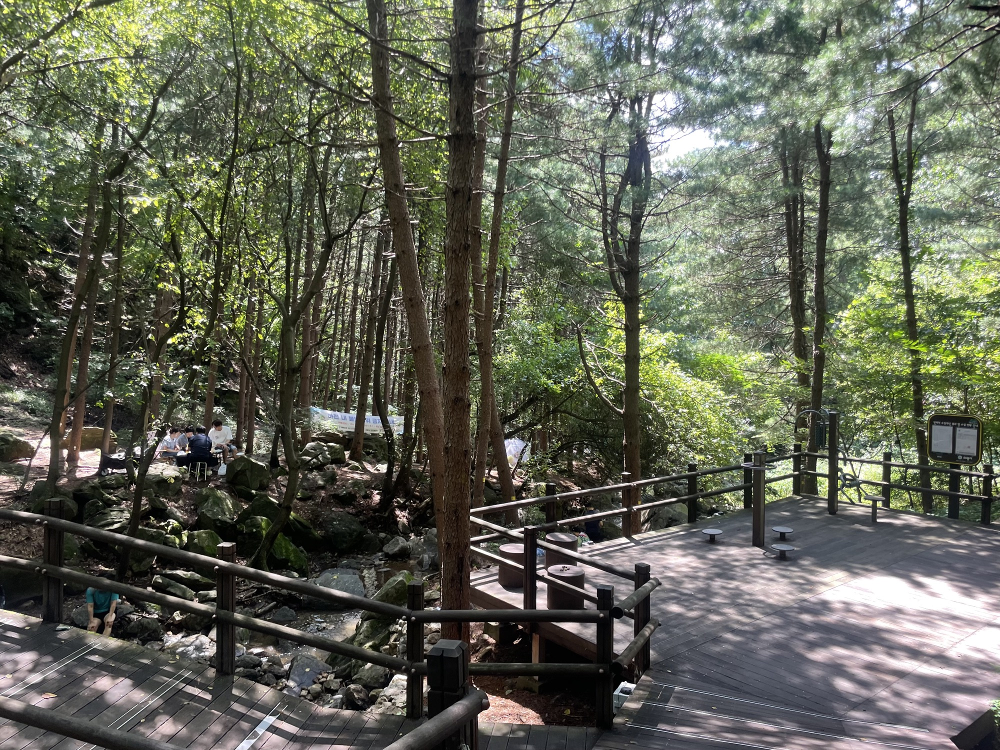
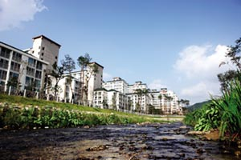
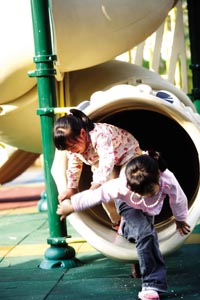
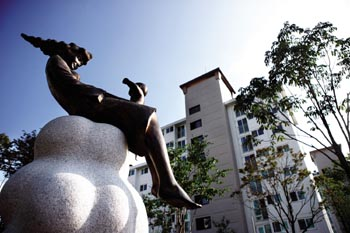
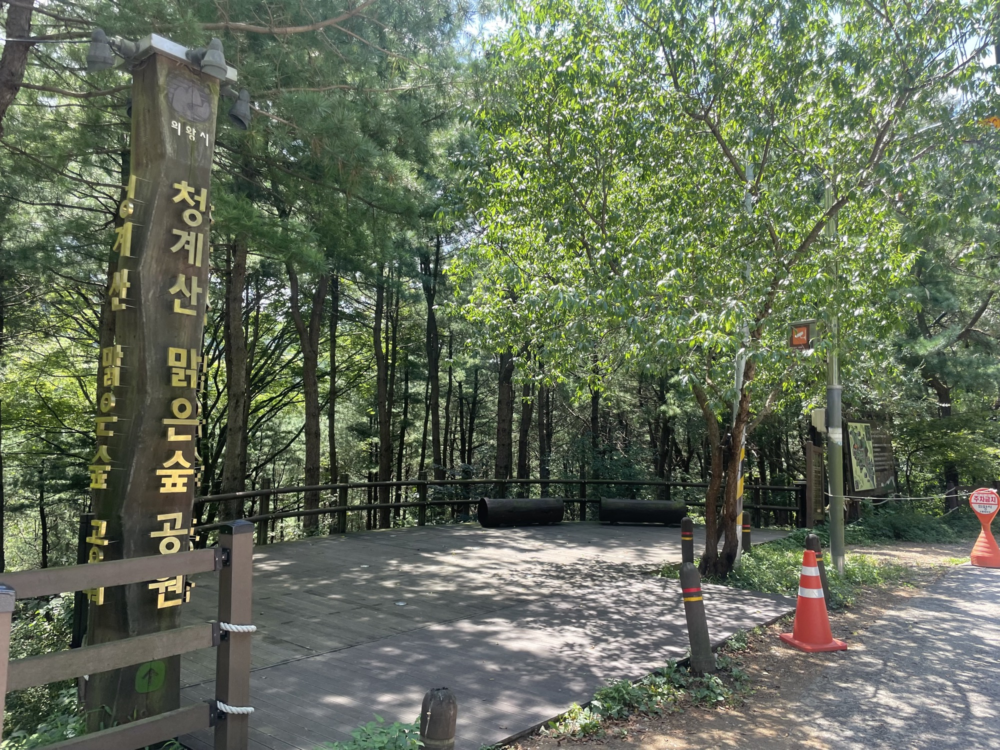
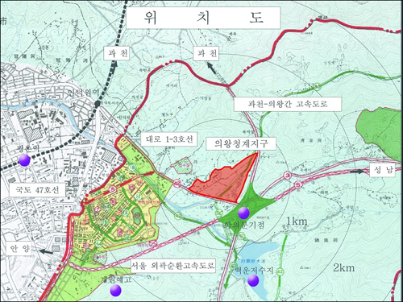

청계산 자락의 보안 도시. 의왕 청계동, 273세대의 부티크 단지. 2007년 입주 19년차로 신축은 아니지만, 시간이 단지에 정원을 만들었습니다. 광교·평촌이 도시의 럭셔리라면, 청계는 자연 안의 작은 거주입니다.

광교는 도시의 럭셔리입니다.
평촌은 학원가의 도시입니다.
청계는 자연 안의 작은 거주입니다.
대단지의 위엄도, 신축의 광택도 없습니다. 청계가 가진 것은 다른 데 있습니다. — 자연·소규모·학군·시간.
네 개의 산과 한 개의 호수가 단지 인근에 있습니다. "단지 뒤가 산이라 공기가 좋고 산책하기 좋다"는 입주민 평. 광교호수공원 같은 인공 자연이 아닌, 진짜 산의 자락에 자리한 단지입니다.
광교 자연앤힐스 1,764세대, 평촌어바인퍼스트 4,154세대와 비교하면 청계는 8배~15배 작은 부티크 단지. 이웃을 얼굴로 아는 규모, 동선이 짧은 일상, 단지 안의 익명성이 적은 거주 환경입니다.
어린 자녀를 둔 가정에게 가장 중요한 변수는 통학 동선의 안전. 청계는 단지 도보 5분 내 초·중학교가 있어 등하교를 부모가 동행하지 않아도 되는 자연스러운 학군 입지입니다. 백운중도 권역.
19년차로 신축 프리미엄은 없지만, 단지 내 조경 수목이 자란 단지. 신축 단지의 갓 심은 묘목과는 다른, 시간이 만든 풍경. 그리고 그동안 형성된 입주민 커뮤니티의 안정성.
청계산 자락이지만 도시와 단절된 곳은 아닙니다. 인덕원·평촌의 도시 인프라가 차로 10분권, 청계역(인동선) 신설로 도보권에 지하철역이 추가될 예정입니다.
대도시 단지의 화려한 커뮤니티는 없습니다. 그 대신 단지 자체가 산과 이어진 일상의 공간이 됩니다.
단지 뒤로 펼쳐진 산. 등산이 일상화되는 위치. 흙산이라 산림이 울창하고, 계곡물이 맑은 청계산 맑은숲 공원이 인근에 있어 사계절 산책로로 이용됩니다.
청계산과 백운산 사이의 자연 호수. 의왕시의 명소이자 산책·라이딩 코스. 백운호수 둘레길은 단지에서 차량으로 단시간 거리.
도보 3~5분 통학권. 어린 자녀가 부모 동행 없이도 안전하게 등하교 가능한 동선. 어린이집·유치원도 단지 권역 안에.
차로 15분이면 평촌 학원가·평촌중앙공원 권역. 청계의 자연 환경에 평촌의 도시 인프라를 더해 쓸 수 있는 거리.
안양·평촌 권역의 종합병원. 일상 진료부터 응급까지 차량 15~20분 권역.
의왕청계IC가 가까워 차량 동선이 우수. 과천·강남 방향, 분당·판교 방향 모두 자유로운 위치.
평촌 학원가의 화려함은 없습니다. 하지만 어린 자녀가 부모 라이딩 없이 안전하게 통학할 수 있는 거리 — 어떤 학원가도 대체하기 어려운 가치입니다.
인덕원~동탄선(인동선)의 청계역(가칭) 신설로 청계마을 휴먼시아는 지하철역 도보 권역에 진입합니다. 현재 인덕원역 버스 환승 동선이 도보 5분의 직접 접근으로 바뀝니다.
그린벨트 해제지역 첫 국민임대 단지. "청계산 숲속마을 1번지" 캐치프레이즈로 입주 시작. 의왕 청계지구는 공공분양 2,030가구 + 단독 95가구 + 국민임대 1,130가구 규모.
266세대 추가 입주로 청계마을 휴먼시아 1·2단지 분양 완성.
인덕원~동탄선(인동선) 본격 공사 단계. 청계역(가칭) 신설로 단지 도보 5분 내 지하철역 추가 예정. 인덕원역 GTX-C 정차 호재도 권역 동반 상승 요인.
인덕원~동탄 노선 단계적 개통. 청계역 정차로 단지 가치 재평가. 강남 접근성 환승 1회로 단축. 단, 개통 시점은 변동 가능.
84㎡ 실거래 약 8.1억. 광교 자연앤힐스(17.8억) 대비 약 46%, 평촌어바인퍼스트(9.6억) 대비 약 84% 수준. 자연·학군의 가성비를 찾는 매수자의 진입가.
같은 수도권 남부에서, 광교의 46% / 평촌의 84% 가격으로 자연환경과 학군을 함께 갖춥니다. 신축 프리미엄과 도시 인프라를 양보한 대신, 산 자락의 거주와 작은 동네의 안정성을 얻는 선택.
청계마을 휴먼시아 2단지는 광교·평촌과 다른 카테고리의 자산입니다. 매수 결정 전 반드시 알아둘 여섯 가지를 정리합니다.
신축 프리미엄은 부재. 단지 인프라(주차, 커뮤니티 시설, 평면 효율)는 신축 단지(평촌어바인퍼스트 2021) 대비 약함. 향후 5~10년 내 노후도 진행 가능.
매매 사례 누적이 적어 시세 디스커버리가 느림. 광교 자연앤힐스(1,764세대)·평촌어바인퍼스트(4,154세대) 대비 매물 회전이 느릴 수 있음. 호가-실거래 갭이 변동성 큰 시점에 벌어질 수 있음.
4호선 인덕원역까지 도보 X (버스 환승 필수, 차량 15분). 광교 자연앤힐스(신분당선 도보 1분)와 비교 불가. 청계역(가칭, 인동선) 신설 후 도보권 진입 예정이나 개통 시점 변동 가능.
국민임대 단지(3·6단지)와 같은 권역의 분양 단지. 단지명에 LH 브랜드가 포함되어 광교 자연앤힐스(현대건설)·평촌어바인퍼스트(4사 컨소시엄)와 같은 민간 프리미엄 브랜드는 아님. 시세에 브랜드 디스카운트가 일부 반영됨.
광교 갤러리아·아주대병원 같은 단지 도보권 인프라 부재. 안양샘병원·한림성심은 차량 15~20분. 평촌 학원가도 차량 15분. 일상 인프라 의존도가 차량으로 옮겨감.
덕장초·덕장중은 도보 5분이지만 학교 자체 진학률은 평범 (평촌 학원가 효과 없음). 학원가 통학은 차량 라이딩 필수. 학원 의존도가 높은 가정에는 적합하지 않음.
2009년 입주 당시의 기록 사진과, 단지에서 도보 10분 거리의 청계산 맑은숲 공원 현재 모습. 산이 단지의 마당이 된 19년의 거리.





※ 단지 사진은 2007~2009년 입주 당시 보도자료, 공원 사진은 단지 도보권의 청계산 맑은숲 공원 현장 기록입니다. 현재 단지는 입주 후 시간이 흘러 조경 수목이 자라고, 단지 내 풍경이 더욱 자연 친화적으로 변했습니다.
도시는 광교가, 학원가는 평촌이 가져갑니다.
청계는 나머지 모든 것을 가집니다.
산 자락의 작은 동네에서 시작되는 조용한 일상.
광교·평촌의 절반의 절반 가격으로, 청계산이 단지의 뒷벽이 됩니다.